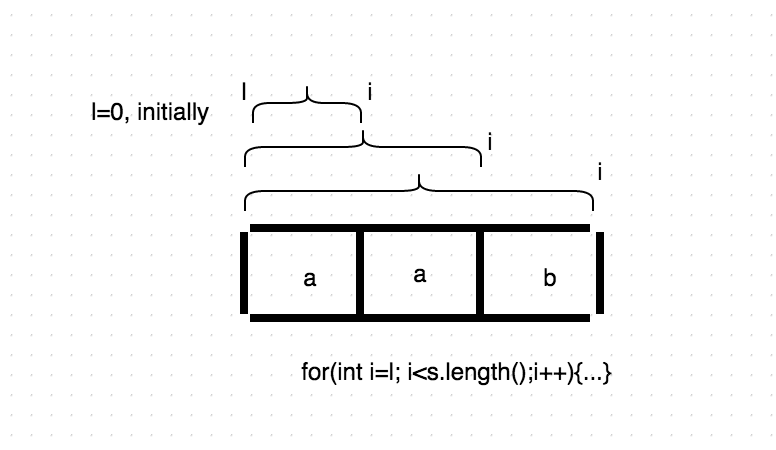
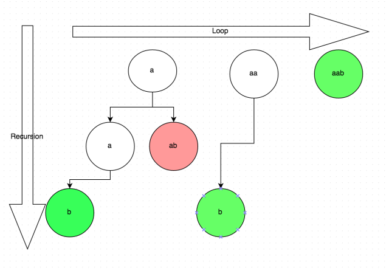

DFS和Backtracking的区别
-
DFS: Search in a already existed graph
-
BackTracking: Generating Graph/Tree
迷宫比喻
while exist not found:
for each path in the fork:
check whether the path is safe
if yes : #notice that, we haven't select the current path in the fork
select it and continue walk
if all paths don't resolve the maze, return False
Generics 模板
Notice that the algorithm is expressed as a boolean function. This is essential to understanding the algorithm. If solve(n) is true, that means node n is part of a solution--that is, node n is one of the nodes on a path from the root to some goal node. We say that n is solvable. If solve(n) is false, then there is no path that includes n to any goal nod
boolean solve(Node n) {
if n is a leaf node {
if the leaf is a goal node,
return true
else
return false
} else {
for each child c of n {
if solve(c) succeeds, return true
}
return false
}
}
void solve(Node n) {
if n is a leaf node {
if the leaf is a goal node,
count++,
return;
else return
} else {
for each child c of n {
solve(c)
}
}
}
模板
def dfs(tmp, res):
if remain < 0: #impossible
return
if success: #ending condition/base case
res.append(tmp[:])
return
for all possible childs: #同一层搜索
if not Valid(): #檢查当前位置是否符合条件，
continue #如果不符合条件，就skip到下一child
tmp.append(arr[i])
dfs(tmp.res) # 到下一层搜索
tmp.pop()
Case Study
1. Permutation
将数组当做一个池子，第一次取出一个数，然后在池子里剩下的数中再任意取一个数此时组成两个数，
然后再在池子中剩下的数里取数，直到无数可取，即取完一次，形成一个排列。
def dfs(tmp,res,visited):
for i in range(0,n):
if vistied(): #第一次只能取出一个数
cointine
visited[i] = 1
dfs()
visited[i] = 0
2. Combination
Combination里的1,2和2,1是一样，所以2,1要忽略
def dfs(l, tmp, res):
for i in range(l, n):
dfs(i)# 每个elemnt可以重复用， 但不能逆序
def dfs(l, tmp, res):
for i in range(l, n):
dfs(i+1)# 每个elemnt只能用一次
3. Permutation和 Combination 里有重复数字
def dfs(l, tmp, res):
for i in range(l, n):
if i != l and arr[i - 1] == arr[i]: # 跳过重复数字
continue
dfs(i+1)# 每个elemnt只能用一次
4. String Parition
def dfs(l, tmp, res):
for i in range(l, len(s)):
subString = s[l:i+1]
dfs(i+1, tmp, res)
 
2D Matrix
注意地方
- for loop是横着走（同一层）
- recursive()是向下走（下一层）
- 如果 recursive function 有 return type, 你一定要加 return 在 fun_name() 之前
Reference
https://www.jianshu.com/p/3ef0e4e1114d